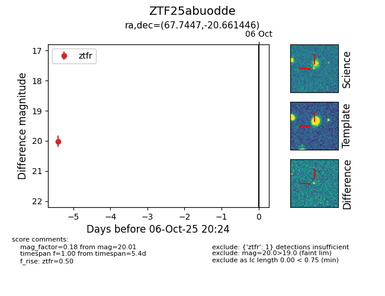

FINK: ZTF25abuodde
Lasair: ZTF25abuodde
ALeRCE: ZTF25abuodde
ZTF25abuodde (ztf,fink)
equatorial (ra, dec) = (67.7447,-20.66145)
galactic (l, b) = (218.0542,-39.78443)

last ztfr=20.01
1 ztfr detections